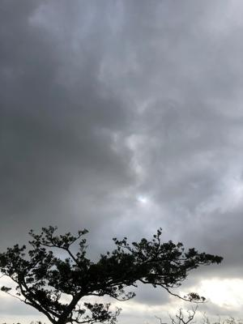
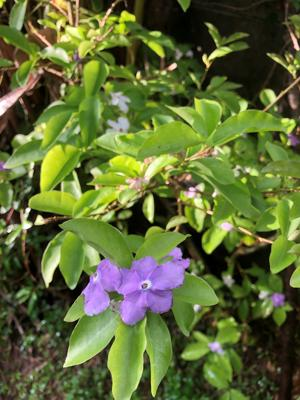

うるがいの話 ある日
最新: 議事録【うるがいの話 ある日】とは 一日だけのプログです
『うるがいの話』の最新一日だけのプログで、通信料が少なく経済的だ。カニの画像をクリックすると全ての日付が載る『うるがいの話』サイトを表示します
|
|
【うるがいの話】 うるがい(ｳﾙｶﾞｲ urugai)とは、『もずくがに』の名前でとても大きくなります。 |
|---|---|
|
|
【カミマヤーの話】 猫のことを方言でマヤーといいます。カミマヤー（kamimayaa）とは、神の猫のことです。 |
|
【たながぁの音楽】 たながぁ（ﾀﾅｶﾞｰtanagaa）とは手長えびのことで、何種類かあり大きいのは車 エビぐらいになります。 |

|
【ぶながぁの話】 ぶながー(bunagaa)とは、赤い髪の毛、赤い身体、そして身長は１ｍ２０ｃｍ ぐらい、川の蟹を食べているの目撃された。場所は沖縄県国頭郡大宜味村のと ある村僕の隣近所に住んでいる爺さんから、聞いた話です。 |
|
|
【ギーマの話】 ギーマ(giima)とは、山原の里山に咲くスズランに似た、 花を付けます。実は食べられます、 気が付くと口の周りが紫になっています。 |
2022年04月15日 (金）議事録
21:43
 
午前中に、動画研修最終課題の提出を終えホットする（合格判定はまだだが）
課題は、インタビューの動画を講師が提供した不完全サンプル動画を、参考に
動画素材を使って完成させること。５分間の会社紹介である、ンモー、百回と
は言わないが何十回とインタビューを繰り返し聞く、だんだんウンザリしてき
た。インタビューのノイズがひどいのと、インタビュアーのマスクをした女性
のこもった声のため、はぁ？、何を言っているか分からん！。ムカッときたの
でソフトでノイズを軽くできないか調べ、適用した。オオ、会話がクリアにな
った・・・、それでも彼女のこもった声で聞こえない箇所があった、しかたく
雰囲気でテロップ（字幕）を作成することにした。しかし、動画の講師は、動
画のテブレによる映像の軽減の方法は教えてくれたのに、ノイズの軽減は教え
なかった。ワザと、受講者の技量を試しているのかと考えてしまった。サンプ
ルは不完全なので、５分間のインタビューの記録を文字にする。ン、もしかし
てオールマイティのグーグルで録音を文字にしてくれるツーツが、あるのでは
と調べてみた、あった『Googleドキュメントで音声入力』・・明日につづく。
２１時３９分 ビットコインの総資産 ￥１４、６９２↓